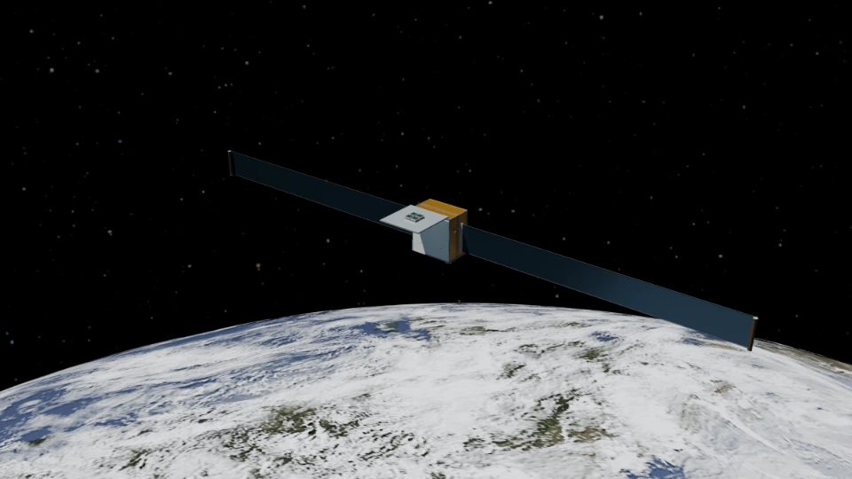
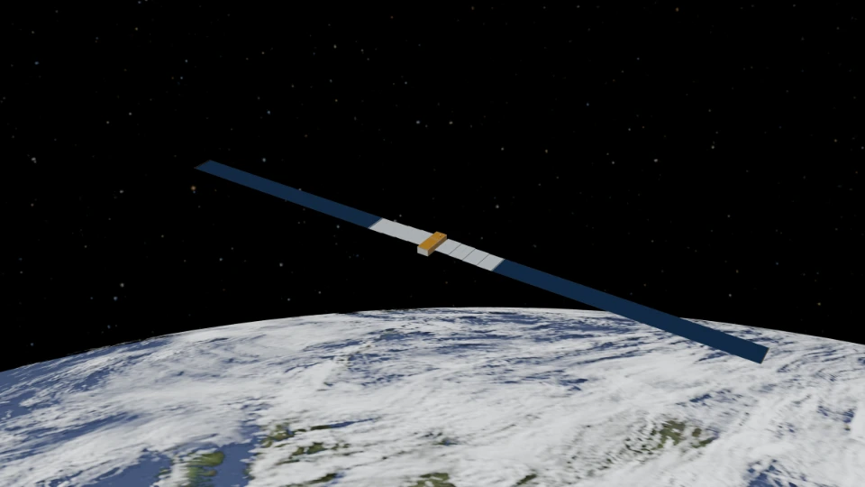
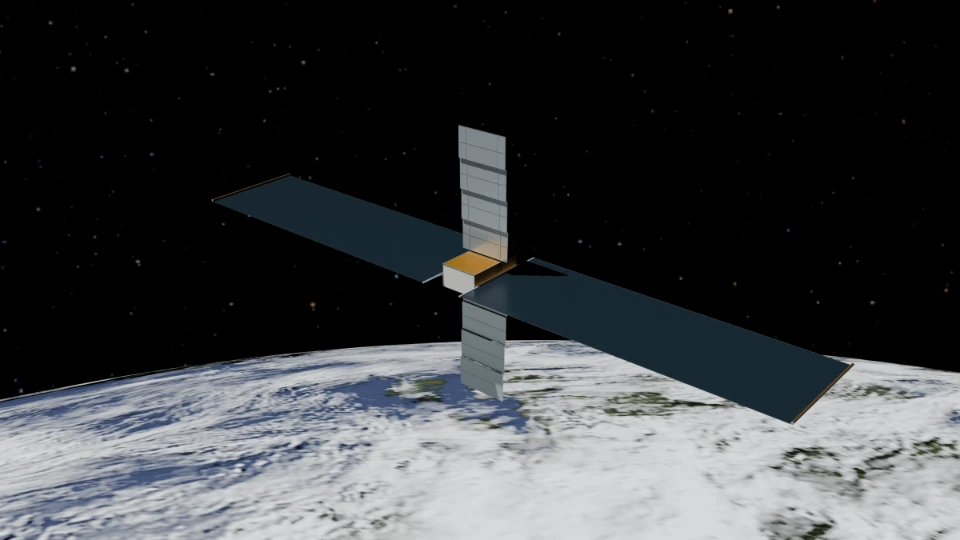
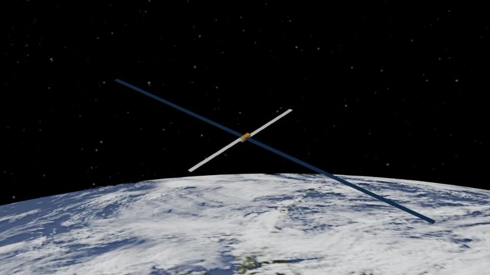
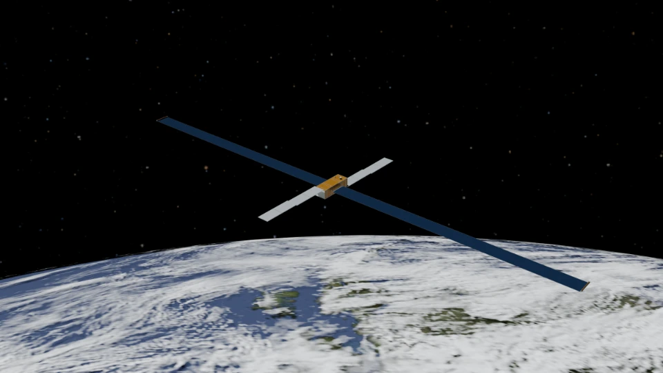
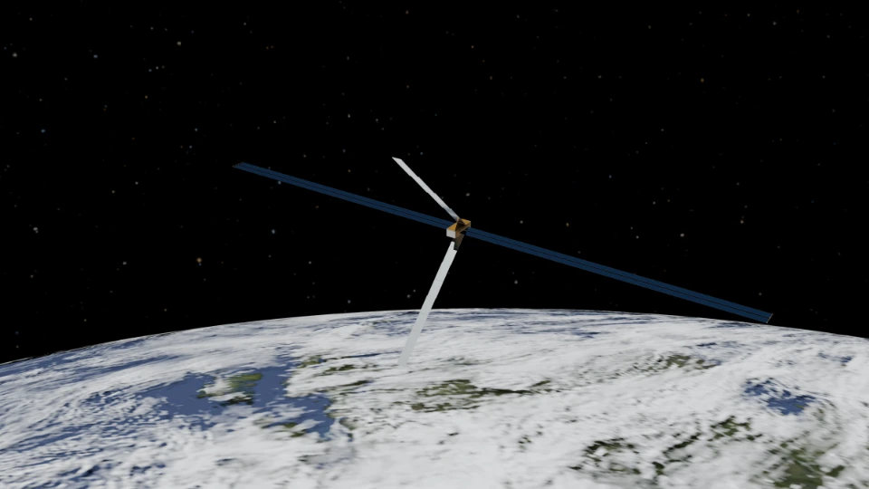

Six views of the workbench’s reference spacecraft, rendered from the project’s modeled geometry.
These are project workbench illustrations, not official supplier renders, endorsements or photographs of operating spacecraft. The lighting and viewpoints are illustrative; the images do not establish mission feasibility or hardware verification.
The reference collection
Complete deployed architectures, with the June and September Orbital revisions shown separately.

Redwire 8 kW compute nodeRedwire platform family

Starcloud-3Starcloud inline family

SpaceX Starmind AI1Starmind cross family

Orbital-1 / ReflexSeptember 2026 revision · Reflex family

Orbital June referenceJune 2026 revision · Rack family

Star Catcher self-powered node modelHeat-lift study family
Artists, sources & licenses
Spacecraft & staging
Spacecraft geometry, PBR material illustrations, scripts and staging are project artifacts under the accompanying AGPLv3 license.
Workbench material maps are illustrative rather than vendor qualification evidence. Full reference names, sources and assumptions remain in the exported metadata.
Reusing these illustrations? Retain these credits and links with derivative images, and keep the attribution associated with the artwork.
Provenance & source records
The six illustrations were exported from the v56 reference catalog using recipe odc-study-2026-11-r2 and complete deployed spacecraft geometry. Each stage uses the reference’s modeled source-case altitude, with illustrative lighting/viewpoint.
The source snapshot is recorded at project commit ce1096c. The records below preserve the original artwork paths, image checksums and model metadata.